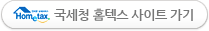
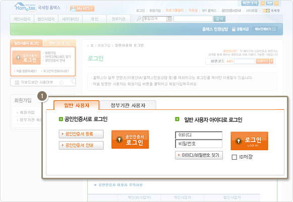
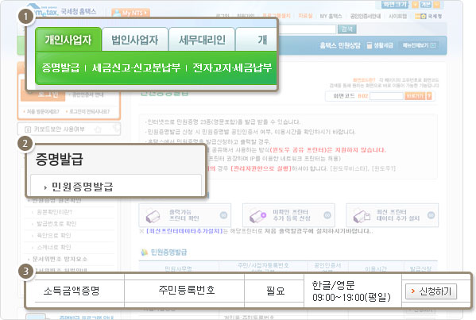
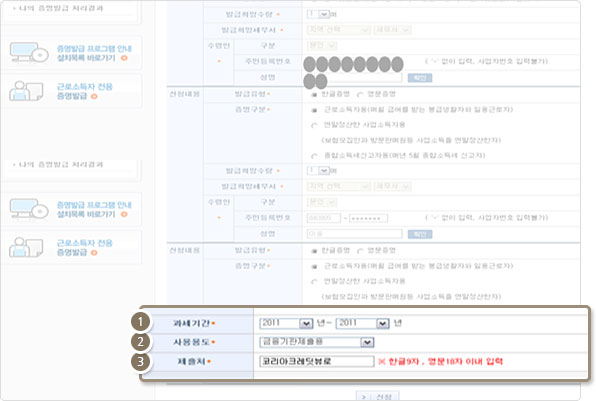
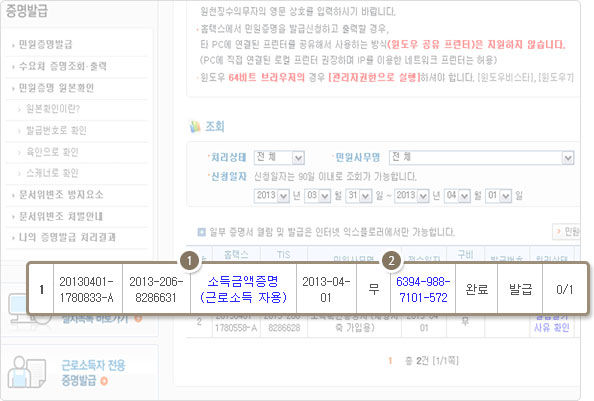

소득금액증명 발급방법 안내
닫기
증명서 발급방법 안내

1
국세청 홈텍스 홈페이지 접속 및 로그인
-
www.Hometax.go.kr
2
로그인
1.공인인증서 또는 일반 사용자 아이디로 로그인

3
소득금액증명선택
1. 좌측 상단의 개인사업자 - 증명서 발급 민원증명서 선택
2. 소득금액증명 선택

4
소득금액증명 발급 신청서 작성
1. 과세기간 선택(최소 직전년도 선택)
2. 사용용도 : 금융기관 제출용 선택
3. 제출처 : 코리아크레딧뷰로

국세청 소득금액 증명의 종류는 3가지 입니다. 자신의 소득에 맞는 것을 선택하세요.
두가지 이상의 소득이 있는 경우는 두 가지 모두 각각 발급받아 입력하세요.
근로소득과 종합소득이 있는 경우
-
근로소득자용, 종합소득세 신고자용을 각각 발급받아 발급번호를 입력하세요.
매월 급여를 받는 봉급생활자 및 일용근로자
-
근로소득자용
보험모집인, 방문판매업 등 사업소득을 연말정산한 자
-
사업소득자용
매년 5월 종합소득세 신고자
-
종합소득세신고자용
5
소득금액 증명서 및 발급번호 확인
1. 증명서 확인 후 입력
2. 증명서 확인을 위한 발급번호 입력
